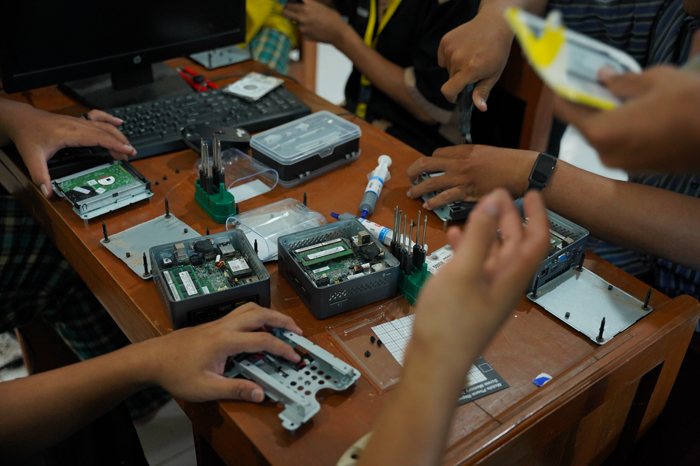

Sinkronisasi Kurikulum TJKT/TKJ SMK Al-fusha dengan Dunia Kerja

Sinkronisasi kurikulum Teknik Komputer dan Jaringan (TKJ) atau Teknik Jaringan Komputer dan Telekomunikasi di SMK Al Fusha Kedungwuni Pekalongan dengan dunia kerja dilakukan melalui penyelarasan materi pembelajaran, praktik kerja, dan proyek nyata berbasis industri. Langkah penting ini mencakup:
- Kebutuhan Industri: Menyesuaikan materi konfigurasi jaringan, perakitan, dan troubleshooting dengan standar teknologi terkini di dunia usaha/dunia industri (DU/DI).
- Lapangan & Proyek Nyata: Melibatkan siswa dalam pembangunan infrastruktur jaringan riil serta program Praktik Kerja Lapangan (PKL) di instansi atau perusahaan mitra.
- sertifikasi & Keterampilan Praktis: Membekali siswa dengan kemampuan teknis langsung seperti instalasi kabel, manajemen IP, dan pengamanan sistem jaringan agar siap kerja setelah lulus.
Tabel Sinkronisasi Kurikulum & Kebutuhan Industri
Berikut adalah pemetaan antara mata pelajaran keahlian di SMK Al-fusha dengan standar kebutuhan industri saat ini:
| Materi Kurikulum SMK | Kebutuhan Industri (IDUKA) | Kualifikasi / Output Siswa |
|---|---|---|
| Jaringan Dasar & Perbelanjaan Alat | Pemasangan & Pengabelan LAN, Fiber Optic (FO), Splicing | Teknisi Lapangan / FO Support |
| Administrasi Infrastruktur Jaringan | Konfigurasi Router MikroTik/Cisco, Management Bandwidth, VLAN | Network Engineer Junior |
| Administrasi Sistem Jaringan | Pengelolaan Server Linux/Windows, Web Hosting, Domain & Cloud | System Administrator |
| Keamanan Jaringan (Cybersecurity) | Firewalling, Monitoring Trafik, Penanganan Threat & Vulnerability | IT Security Analyst Support |
Tujuan Utama Penyelarasan
Dengan adanya sinkronisasi kurikulum ini, siswa lulusan TJKT SMK Al-fusha diharapkan tidak hanya menguasai teori, tetapi juga memiliki sertifikasi kompetensi serta pemahaman langsung mengenai alur kerja profesional di perusahaan teknologi maupun penyedia jasa internet (ISP).
Tinggalkan Balasan
Alamat email Anda tidak akan dipublikasikan. Kolom yang wajib diisi ditandai dengan *